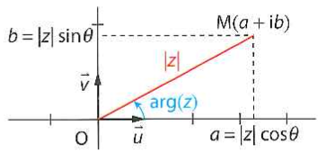

Les nombres complexes
1 : Les différentes formes
1 : La forme algébrique
Définition :
- Les nombres complexes sont tous les nombres tel que z = a +
ib avec a et b ∈ ℝ et i²=-1
- On dit que a +ib est la forme algébrique
- On a z = a +ib : a est la partie réelle b est la partie imaginaire
Exemple : z = 2i-4
-4 est la partie réelle
2 est la partie imaginaire
- On note ℂ l'ensemble des nombres complexes
- On peut interpréter la géométriquement la forme algébrique de tout nombre complexe dans un repère orthonormé
(O,I,J) le nombre complexe a + ib est représenté par son point M (a,b) On dit que a +ib est l'affixe du point M, ou du vecteur OM
2 : La forme trigonométrique
Définition :
Soit z = a +ib
On appelle module de z, le nombre |z| ou parfois r et défini par |z| = √(a² + b²)
Si z est non nul, on appelle argument de z, qu'on note arg(z), toute mesure de l'angle (OI,OM) où M est le point d'affixe z

Propriété
Tout nombre non nul z peut s'écrire sous la forme |z|(cosθ + i sin θ)
On dit que z est sous forme trigonométrique
On a le même nombre complexe écrit sous deux formes :
z = a + ib
z = |z|(cosθ + i sin θ)
On a alors :
a = |z|cos(θ)
b = |z|sin(θ)
|z| = √(a²+b²)
cos θ = a/|z|
sin θ = b/|z|
3 : La forme exponentielle
Définition
Pour tout réel θ, on appelle exponentielle complexe d'argument θ cosθ + i sin θ, noté eiθ
En particulier, le module de eiθ est 1 et un de ses arguments est θ
Propriété
Tout nombre complexe non nul de module |z| et d'argument arg(z) peut s'écrire sous la forme eiθ
2 : La propriété algébrique
1 : la forme exponentielle
On admet les exponentielles complexes sont similaires à celles des exponentielles réelles.
Propriété
Avec θ et Θ des réels et n entier naturel
1) eiθ × eiΘ = ei(θiΘ)
2) eiθ / eiΘ = ei(θ-Θ)
3) (eiθ)n = einθ
2 : La formule d'addition et de duplication en trigonométrie
Formules d'addition :
Pour tous réels θ et Θ :
cos(θ+Θ)= cos(θ) * cos(Θ) - sin(θ) * sin(Θ) "Les 2 cos - les 2 sin"
sin(θ+Θ)= sin(θ) * cos(Θ) + cos(Θ) * sin(Θ) "Cos sin + cos sin"
Remarques : Si Θ = θ :
cos(2θ)= cos²θ - sin²θ
sin(2θ)= 2sin(θ)*cos(θ)
Formules de duplication :
cos(2θ) = cos²θ - sin²θ
cos(2θ) = 2cos²θ - 1
sin(2θ) = 2sinθ cosθ
cos(2θ) = 1 - sin²θ
Les transformations du plan
Une transformation du plan associe un point M à un un point M'. Soit M d'affize z et M' d'affixe z' dans un plan rapporté à un repère orthonormé d'origine 0.
L'expression de cette transformation est alors la fonction f de ₵ dans L'expression de cette transformation est alors la fonction f de ₵ dans ₵ telle que f(z) = z'.
1 Translation
Soit u un vecteur et M et M' deux points d'affixe z et z'.
On dit que M' est l'image de M par la translation de vecteur u à MM' = u
| Transformation du plan |
Expression complexe |
Illustration |
| Translation de vecteur u d'affixe b
M(z)-> M'(z')
|
f(z)=z+b |
*vecteur* |
2 Homothéties
Soit a un réel non nul et M et M' deux points. On dit que M' est l'image de M par l'homothétie de centre 0 et de rapport a si
OM' = OM × a
| Transformation du plan |
Expression complexe |
Illustration |
| Homothétie de centre O et de rapport a
M(z) -> M'(z)
|
f(z)=z × a |
*vecteur* |
3 Rotation
Soit θ un nombre réel non nul et M et M' deux points d'affixe z et z' dans un plan (θ,i,j) orthonormé avec M ≠ 0 et M' ≠ 0.
On dit que M' est l'image de M par la rotation de centre O et d'angle θ si OM = OM' et l'angle (OM;OM') = θ[2π]
| Transformation du plan |
Expression complexe |
Illustration |
| Rotation de centre 0 et d'angle θ.
M(z) -> M(z')
|
eiθ× z |
*vecteur* |